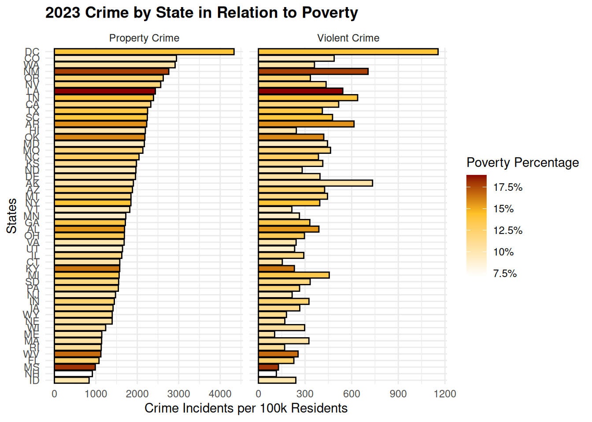
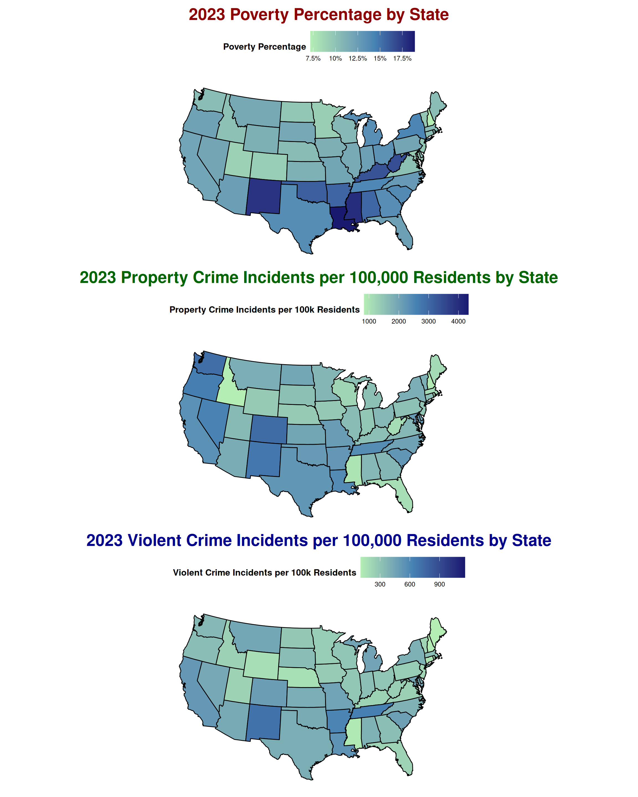

# See renv.lock
library(ggplot2)
library(dplyr)
# library(sf)
library(maps)
# library(stringr)
library(tidyr)
library(tidyverse)
library(mapproj)
library(patchwork)
library(scales)
library(plotly)
##################################
# Data Sources
##################################
state <- read.csv("data/crime_plus_poverty_2023.csv")
county <- read.csv("data/crime_poverty_by_county_2023.csv", check.names = FALSE)
##################################
# Data Cleaning
##################################
# Droping rows where census data was not available for 2023 source county data
if ("no_population" %in% names(county)) {
county <- county %>% dplyr::filter(no_population != "true")
}
county <- county %>%
mutate(
poverty_rate = as.numeric(poverty_rate),
property_crime_per_100k = as.numeric(property_crime_per_100k),
violent_crime_per_100k = as.numeric(violent_crime_per_100k)
)
##################################
# Useful functions & Vars
##################################
county_metric_cols <- c("poverty_rate",
"property_crime_per_100k",
"violent_crime_per_100k")
# Create geometries for mapping
us_counties <- ggplot2::map_data("county") # long/lat + region (state), subregion (county)
county_key <- maps::county.fips %>% mutate(polyname = str_to_lower(polyname))
counties_poly <- us_counties %>%
mutate(polyname = paste(region, subregion, sep = ",")) %>%
left_join(county_key, by = "polyname") %>%
rename(fips = fips) %>%
filter(!is.na(fips))
# Function for creating maps
build_county_map <- function(data) {
ggplot(data, aes(long, lat, group = group)) +
geom_polygon(color = "gray85", linewidth = 0.1, na.rm = TRUE) +
coord_quickmap() +
theme_void(base_size = 12) +
theme(
legend.position = "bottom",
plot.title = element_text(face = "bold", size = 16),
plot.margin = margin(4, 8, 4, 8)
)
}
# Helper to compute sensible upper limits (95th percentile) for crime and poverty rates
p95 <- function(x) {
x <- x[is.finite(x)]
if (!length(x)) return(NA_real_)
as.numeric(quantile(x, 0.95, na.rm = TRUE))
}
# Derive county FIPS given a data frame
# Uses: fips OR state+county codes OR state_abbr+county name
derive_fips <- function(df, county_key = NULL, keep_unmatched = FALSE) {
stopifnot(is.data.frame(df))
finish <- function(out) invisible(if (keep_unmatched) out else dplyr::filter(out, !is.na(.data$fips)))
# county crosswalk (polyname = "state,county" lowercase)
if (is.null(county_key)) {
county_key <- maps::county.fips |>
dplyr::mutate(polyname = stringr::str_to_lower(polyname))
}
# Already has FIPS
if ("fips" %in% names(df)) {
out <- dplyr::mutate(df, fips = stringr::str_pad(as.character(.data$fips), 5, "0"))
return(finish(out))
}
# state + county numeric/string codes
if (all(c("state", "county") %in% names(df))) {
out <- dplyr::mutate(
df,
fips = paste0(
stringr::str_pad(as.character(.data$state), 2, "0"),
stringr::str_pad(as.character(.data$county), 3, "0")
)
)
return(finish(out))
}
# state_abbr + county name (match via polyname)
county_col <- c("county_name", "county")[c("county_name", "county") %in% names(df)][1]
if (!is.na(county_col) && "state_abbr" %in% names(df)) {
states_lookup <- tibble::tibble(
state_abbr = c(state.abb, "DC"),
state_name = c(state.name, "District of Columbia")
) |>
dplyr::mutate(state_name_lower = stringr::str_to_lower(state_name))
norm_county <- function(x) {
x |>
stringr::str_to_lower() |>
stringr::str_replace_all("\\s+(county|parish|borough|census area|municipality|city)$", "") |> # Regex to extract county name
stringr::str_replace_all("^st\\.?\\s", "saint ")
}
out <- df |>
dplyr::left_join(states_lookup, by = "state_abbr") |>
dplyr::mutate(polyname = paste(.data$state_name_lower, norm_county(.data[[county_col]]), sep = ",")) |>
dplyr::left_join(county_key, by = "polyname") # adds fips
return(finish(out))
}
stop("derive_fips(): need one of: 'fips'; 'state'+'county'; or 'state_abbr'+county name.")
}
# Used to make the color scale look better
scale_fill_binned_left <- function(
x, # numeric vector used to size bins
step, # bin width
min_cap = NULL,
max_cap = NULL,
label_fmt = label_percent(accuracy = 1),
name = NULL, # legend title
option = "mako", begin = 0.15, end = 0.90, direction = -1, # colormap or palette
bar_width_mm = 200, bar_height_mm = 12,
title_size = 13, label_size = 12,
show_separators = TRUE # draw white separators at bin edges
) {
stopifnot(is.numeric(x), is.numeric(step), step > 0)
# compute "nice" upper bound from p95, then clamp to caps if provided
upper_raw <- ceiling(p95(x) / step) * step
if (!is.null(min_cap)) upper_raw <- max(min_cap, upper_raw)
if (!is.null(max_cap)) upper_raw <- min(max_cap, upper_raw)
brks <- seq(0, upper_raw, by = step)
labs <- paste0(label_fmt(head(brks, -1)), "–", label_fmt(tail(brks, -1)))
labs <- c(labs, "")
scale_fill_viridis_b(
option = option, begin = begin, end = end, direction = direction,
limits = range(brks),
breaks = brks,
labels = labs,
oob = scales::squish, na.value = "gray95",
name = name %||% "",
guide = guide_colorsteps(
title.position = "top",
label.position = "top", # labels above bar
label.theme = element_text(size = label_size, hjust = 0), # left-justify
ticks = show_separators,
ticks.colour = if (show_separators) "white" else NULL,
ticks.linewidth = if (show_separators) 2 else NULL,
show.limits = FALSE,
barwidth = grid::unit(bar_width_mm, "mm"),
barheight = grid::unit(bar_height_mm, "mm"),
title.theme = element_text(size = title_size, face = "bold",
margin = margin(b = 4))
)
)
}
`%||%` <- function(a, b) if (is.null(a)) b else a
# Formtter for plotly maps
apply_plotly_binned_colorbar <- function(p, brks, labs, palette = "mako",
begin = 0.15, end = 0.90, direction = -1,
title = "Legend", horizontal = TRUE,
thickness = 28, len = 1, show_separators = TRUE,
title_font_size = 13, tick_font_size = 12) {
cols <- viridisLite::mako(length(brks) - 1, begin = begin, end = end, direction = direction)
# invisible heatmap solely to carry the colorbar
p <- p %>%
plotly::add_heatmap(
z = matrix(seq(min(brks), max(brks), length.out = 2), nrow = 1),
showscale = TRUE,
colors = cols,
hoverinfo = "skip",
opacity = 0,
xaxis = "x2", yaxis = "y2"
) %>%
plotly::layout(
xaxis2 = list(visible = FALSE, domain = c(0, 0.001), anchor = "y2", overlaying = "x"),
yaxis2 = list(visible = FALSE, domain = c(0, 0.001), anchor = "x2", overlaying = "y")
)
idx <- length(p$x$data)
p$x$data[[idx]]$colorbar <- list(
title = list(text = title, side = "top", font = list(size = title_font_size)),
tickmode = "array",
tickvals = brks,
ticktext = c(labs, ""), # empty label on rightmost edge
ticks = if (show_separators) "outside" else "",
tickcolor = if (show_separators) "white" else NULL,
tickwidth = if (show_separators) 2 else NULL,
tickfont = list(size = tick_font_size),
len = len,
thickness = thickness
)
if (horizontal) {
p$x$data[[idx]]$colorbar$orientation <- "h"
p$x$data[[idx]]$colorbar$x <- 0.5
p$x$data[[idx]]$colorbar$xanchor <- "center"
p$x$data[[idx]]$colorbar$y <- -0.22
}
p
}Crime And Poverty Redesign Project CODE
Loading Libs and data
The following code fetches the data, sets project variables, and creates several helper functions for making charts looker clearer and cleaner. The entire project uses ggplot2, dplyr, tidyr, tidyverse, maps, mapproj, patchwork, scales, plotly, viridisLite, grid, stringr, tibble libraries. Much of the helpfer functions for the maps leverage this site1
Original Graphic Redesign
This code loads U.S. state-level data on crime and poverty, then creates two interactive scatterplots using ggplot2 and plotly that visualize the relationship between property crime and violent crime, with poverty rate shown as color. The first plot includes all states, while the second excludes Washington D.C. to adjust the axis scales for better comparison. (Utilized assistance from ChatGPT2 when creating all graphs that contain a legend tracking poverty percentage.)
#load state data to be used for all state-level visualizations
#####PLOT 1#####
#create plot with all 3 variables (recreate original graph)
#DO NOT DISPLAY THIS PLOT ON WEBSITE#
dataviz1a = ggplot(state, aes(x=crime_rate_per_100k_property,y=crime_rate_per_100k_violent,
text = paste0("State: ", state_abbr,
"<br>Poverty: ", poverty_rate_pct, "%",
"<br>Property Crime: ", crime_rate_per_100k_property,
"<br>Violent Crime: ", crime_rate_per_100k_violent)))+
geom_point(aes(fill=poverty_rate_pct), color = "black", shape = 21, size = 3.5, stroke = 0.2)+
theme_minimal()+
scale_fill_gradientn(
name = "Poverty Percentage",
colours = c("white", "goldenrod1", "darkred"),
values = scales::rescale(c(0, median(state$poverty_rate_pct, na.rm = TRUE), max(state$poverty_rate_pct, na.rm = TRUE))),
na.value = "grey50",
labels = function(x) paste0(x, "%"))+ #used AI to help create code to add percent symbols in legend
labs(title = "2023 Property Crime vs Violent Crime by State in Relation to Poverty",
x = "Property Crime Incidents per 100k Residents",
y = "Violent Crime Incidents per 100k Residents")
dataviz1a#convert previous plot to an interactive plotly plot
###DISPLAY THIS PLOT ON WEBSITE###
ggplotly(dataviz1a, tooltip = "text")#####PLOT 2#####
#create previous plot excluding the outlier data point (DC)
#DO NOT DISPLAY THIS PLOT ON WEBSITE#
dataviz1b = ggplot(state, aes(x=crime_rate_per_100k_property,y=crime_rate_per_100k_violent,
text = paste0("State: ", state_abbr,
"<br>Poverty: ", poverty_rate_pct, "%",
"<br>Property Crime: ", crime_rate_per_100k_property,
"<br>Violent Crime: ", crime_rate_per_100k_violent))) +
geom_point(aes(fill=poverty_rate_pct), color = "black", shape = 21, size = 3.5, stroke = 0.2)+
theme_minimal()+
scale_fill_gradientn(
name = "Poverty Percentage",
colours = c("white", "goldenrod1", "darkred"),
values = scales::rescale(c(0, median(state$poverty_rate_pct, na.rm = TRUE), max(state$poverty_rate_pct, na.rm = TRUE))),
na.value = "grey50",
labels = function(x) paste0(x, "%"))+ #used AI to help create code to add percent symbols in legend
xlim(800,3000)+
ylim(100,800)+
labs(title = "2023 Property Crime vs Violent Crime by State in Relation to Poverty
(D.C. Excluded)",
x = "Property Crime Incidents per 100k Residents",
y = "Violent Crime Incidents per 100k Residents")
dataviz1b#convert previous plot to an interactive plotly plot
###DISPLAY THIS PLOT ON WEBSITE###
ggplotly(dataviz1b, tooltip = "text")Alternative Data Visualization - Using Bar Charts
This code creates horizontal bar charts showing property and violent crime rates by U.S. state, colored by poverty percentage, first as separate plots sorted by crime rate and then displayed as a single faceted plot using long-format data to compare both crime types side-by-side.
#arrange state data by property crime rate
state2a <- state %>%
mutate(state_abbr = factor(state_abbr, levels = state_abbr[order(crime_rate_per_100k_property)]))
#plot property crime data
#DO NOT DISPLAY THIS PLOT ON WEBSITE#
ggplot(state2a, aes(x=crime_rate_per_100k_property,y=state_abbr)) +
geom_bar(stat="identity", aes(fill=poverty_rate_pct),color='black') +
labs(x="Property Crime Incidents per 100k Residents",
y="States",
title="2023 Property Crime by State in Relation to Poverty")+
theme_minimal()+
scale_fill_gradientn(
name = "Poverty Percentage",
colours = c("white", "goldenrod1", "darkred"),
values = scales::rescale(c(0, median(state$poverty_rate_pct, na.rm = TRUE), max(state$poverty_rate_pct, na.rm = TRUE))),
na.value = "grey50",
labels = function(x) paste0(x, "%")) #used AI to help create code to add percent symbols in legend#arrange state data by violent crime rate
state2b <- state %>%
mutate(state_abbr = factor(state_abbr, levels = state_abbr[order(crime_rate_per_100k_violent)]))
#plot violent crime data
#DO NOT DISPLAY THIS PLOT ON WEBSITE#
ggplot(state2b, aes(x=crime_rate_per_100k_violent,y=state_abbr)) +
geom_bar(stat="identity", aes(fill=poverty_rate_pct),color='black') +
labs(x="Violent Crime Incidents per 100k Residents",
y="States",
title="2023 Violent Crime by State in Relation to Poverty")+
theme_minimal()+
scale_fill_gradientn(
name = "Poverty Percentage",
colours = c("white", "goldenrod1", "darkred"),
values = scales::rescale(c(0, median(state$poverty_rate_pct, na.rm = TRUE), max(state$poverty_rate_pct, na.rm = TRUE))),
na.value = "grey50",
labels = function(x) paste0(x, "%")) #used AI to help create code to add percent symbols in legend#convert state data to long format, so we can combine previous 2 plots into 1
state_long2 <- state2a %>%
pivot_longer(cols = c(crime_rate_per_100k_property, crime_rate_per_100k_violent),
names_to = "crime_type",
values_to = "crime_rate") %>%
mutate(crime_type = recode(crime_type,
crime_rate_per_100k_property = "Property Crime",
crime_rate_per_100k_violent = "Violent Crime"))#plot property crime and violent crime side by side
###DISPLAY THIS PLOT ON WEBSITE###
ggplot(state_long2, aes(x = crime_rate, y = state_abbr)) +
geom_bar(stat = "identity", aes(fill = poverty_rate_pct), color = "black") +
labs(x = "Crime Incidents per 100k Residents",
y = "States",
title = "2023 Crime by State in Relation to Poverty",
fill = "Poverty Percentage") +
theme_minimal() +
scale_fill_gradientn(
name = "Poverty Percentage",
colours = c("white", "goldenrod1", "darkred"),
values = scales::rescale(c(0, median(state$poverty_rate_pct, na.rm = TRUE), max(state$poverty_rate_pct, na.rm = TRUE))),
na.value = "grey50",
labels = function(x) paste0(x, "%"))+ #used AI to help create code to add percent symbols in legend
theme(
plot.title = element_text(face = "bold"))+
facet_wrap(~ crime_type, ncol = 2, scales = "free_x")
Alternative Data Visualization - Using Poverty as Dependent Variable
This code creates a static scatterplot using faceting, then creates and displays a converted interactive scatterplot that visualizes the relationship between poverty rate and crime (property and violent) across U.S. states using plotly subplots. (Utilized assistance from ChatGPT3 when creating “2023 Crime vs Poverty by State, Separated by Crime Type” plot using plotly.)
#create/load hw theme commonly used in class
hw <- theme_gray()+ theme(
plot.title=element_text(hjust=0.5),
plot.subtitle=element_text(hjust=0.5),
plot.caption=element_text(hjust=-.5),
strip.text.y = element_blank(),
strip.background=element_rect(fill=rgb(.9,.95,1),
colour=gray(.5), linewidth =.2),
panel.border=element_rect(fill=FALSE,colour=gray(.70)),
panel.grid.minor.y = element_blank(),
panel.grid.minor.x = element_blank(),
panel.spacing.x = unit(0.10,"cm"),
panel.spacing.y = unit(0.05,"cm"),
# axis.ticks.y= element_blank()
axis.ticks=element_blank(),
axis.text=element_text(colour="black"),
axis.text.y=element_text(margin=margin(0,3,0,3)),
axis.text.x=element_text(margin=margin(-1,0,3,0))
)
#create plot with only property crime and poverty data variables
#DO NOT DISPLAY THIS PLOT ON WEBSITE#
ggplot(state, aes(x=crime_rate_per_100k_property,y=poverty_rate_pct))+
geom_point(fill="green", color = "black", shape = 21, size = 3, stroke = 0.5)+
hw+
labs(title = "2023 Property Crime vs Poverty by State",
x = "Property Crime Incidents per 100k Residents",
y = "Poverty Percentage")#create plot with only violent crime and poverty data variables
#DO NOT DISPLAY THIS PLOT ON WEBSITE#
ggplot(state, aes(x=crime_rate_per_100k_violent,y=poverty_rate_pct))+
geom_point(fill="blue", color = "black", shape = 21, size = 3, stroke = 0.5)+
hw+
labs(title = "2023 Violent Crime vs Poverty by State",
x = "Violent Crime Incidents per 100k Residents",
y = "Poverty Percentage")#convert state data to long format, so we can combine previous 2 plots into 1
state_long3 <- state %>%
select(state_abbr, poverty_rate_pct,
crime_rate_per_100k_property,
crime_rate_per_100k_violent) %>%
pivot_longer(
cols = c(crime_rate_per_100k_property, crime_rate_per_100k_violent),
names_to = "crime_type",
values_to = "crime_rate"
) %>%
mutate(
crime_type = recode(crime_type,
crime_rate_per_100k_property = "Property Crime",
crime_rate_per_100k_violent = "Violent Crime")
)
#plot property crime vs poverty and violent crime vs poverty side by side on same visualization
#DO NOT DISPLAY THIS PLOT ON WEBSITE#
ggplot(state_long3, aes(x = crime_rate, y = poverty_rate_pct)) +
geom_point(aes(fill = crime_type), color = "black", shape = 21, size = 3, stroke = 0.5) +
scale_fill_manual(values = c("Property Crime" = "green", "Violent Crime" = "blue")) +
facet_wrap(~ crime_type, ncol = 2, scales = "free_x") +
labs(
title = "2023 Crime vs Poverty by State, Separated by Crime Type",
x = "Crime Incidents per 100k Residents",
y = "Poverty Percentage",
fill = "Crime Type"
) +
hw ##recreate previous plot using plotly below (used AI to help create desired conversion)
#create the Property Crime plot using plotly
#DO NOT DISPLAY THIS PLOT ON WEBSITE#
plotly3a <- plot_ly(
data = state,
x = ~crime_rate_per_100k_property,
y = ~poverty_rate_pct,
type = "scatter",
mode = "markers",
marker = list(color = "green", line = list(color = "black", width = 0.5), size = 10),
text = ~paste0("State: ", state_abbr,
"<br>Property Crime: ", crime_rate_per_100k_property,
"<br>Poverty: ", poverty_rate_pct, "%"),
hoverinfo = "text",
name = "Property Crime"
) %>%
layout(
title = "Property Crime vs Poverty",
xaxis = list(title = "Property Crime Incidents
per 100k Residents"),
yaxis = list(title = "Poverty Percentage")
)
#create the Violent Crime plot using plotly
#DO NOT DISPLAY THIS PLOT ON WEBSITE#
plotly3b <- plot_ly(
data = state,
x = ~crime_rate_per_100k_violent,
y = ~poverty_rate_pct,
type = "scatter",
mode = "markers",
marker = list(color = "blue", line = list(color = "black", width = 0.5), size = 10),
text = ~paste0("State: ", state_abbr,
"<br>Violent Crime: ", crime_rate_per_100k_violent,
"<br>Poverty: ", poverty_rate_pct, "%"),
hoverinfo = "text",
name = "Violent Crime"
) %>%
layout(
title = "Violent Crime vs Poverty",
xaxis = list(title = "Violent Crime Incidents
per 100k Residents"),
yaxis = list(title = "Poverty Percentage")
)
#combine the two previous plots into a subplot
###DISPLAY THIS PLOT ON WEBSITE###
subplot(plotly3a, plotly3b, nrows = 1, shareY = TRUE, titleX = TRUE, titleY = TRUE) %>%
layout(
title = "2023 Crime vs Poverty by State, Separated by Crime Type",
showlegend = FALSE
)Comparing Crime and Poverty by State on USA Map
This code prepares and joins U.S. state-level geographic and crime/poverty data, then creates three choropleth maps (for poverty, property crime, and violent crime) using ggplot2, and finally combines them into a single vertically-faceted visualization.
#get USA map data and save as tibble
usa_tbl <- map_data("state") %>% as_tibble()
#take state data and convert all state names to lower case
state4 <- state %>%
mutate(state_name = str_to_lower(state_name))
#join USE map data and state data
usa_state_data <- usa_tbl %>%
left_join(state4, by = c("region"= "state_name"))
#create USA map containing poverty data
#DO NOT DISPLAY THIS PLOT ON WEBSITE#
dataviz4a = ggplot(usa_state_data, aes(long, lat, group = group)) +
geom_map(
aes(map_id = region),
map = usa_tbl,
color = "gray80", fill = "gray30", size = 0.3) +
coord_map("ortho", orientation = c(39, -98, 0)) +
geom_polygon(aes( fill = poverty_rate_pct), color = "black") +
scale_fill_gradientn(
name = "Poverty Percentage",
colours = c("darkseagreen2", "steelblue", "midnightblue"),
values = scales::rescale(c(0, median(state$poverty_rate_pct, na.rm = TRUE), max(state$poverty_rate_pct, na.rm = TRUE))),
na.value = "grey50",
labels = function(x) paste0(x, "%")) +
theme_void() +
labs(title = "2023 Poverty Percentage by State",x = "", y = "", fill = "") +
theme(
plot.title = element_text(size = 22, face = "bold", color = "darkred", hjust=0.5),
legend.title = element_text(size=12, face = "bold"),
legend.margin = margin(t = 10),
legend.key.size = unit(1, "cm"),
legend.position = "top")
dataviz4a#create USA map containing property crime data
#DO NOT DISPLAY THIS PLOT ON WEBSITE#
dataviz4b = ggplot(usa_state_data, aes(long, lat, group = group)) +
geom_map(
aes(map_id = region),
map = usa_tbl,
color = "gray80", fill = "gray30", size = 0.3) +
coord_map("ortho", orientation = c(39, -98, 0)) +
geom_polygon(aes( fill = crime_rate_per_100k_property), color = "black") +
scale_fill_gradientn(
name = "Property Crime Incidents per 100k Residents",
colours = c("darkseagreen2", "steelblue", "midnightblue"),
values = scales::rescale(c(0, max(state$crime_rate_per_100k_property, na.rm = TRUE))),
na.value = "grey50") +
theme_void() +
labs(title = "2023 Property Crime Incidents per 100,000 Residents by State",x = "", y = "", fill = "") +
theme(
plot.title = element_text(size = 22, face = "bold", color = "darkgreen", hjust=0.5),
legend.title = element_text(size=12, face = "bold"),
legend.margin = margin(t = 10),
legend.key.size = unit(1, "cm"),
legend.position = "top")
dataviz4b#create USA map containing violent crime data
#DO NOT DISPLAY THIS PLOT ON WEBSITE#
dataviz4c = ggplot(usa_state_data, aes(long, lat, group = group)) +
geom_map(
aes(map_id = region),
map = usa_tbl,
color = "gray80", fill = "gray30", size = 0.3) +
coord_map("ortho", orientation = c(39, -98, 0)) +
geom_polygon(aes( fill = crime_rate_per_100k_violent), color = "black") +
scale_fill_gradientn(
name = "Violent Crime Incidents per 100k Residents",
colours = c("darkseagreen2", "steelblue", "midnightblue"),
values = scales::rescale(c(0, max(state$crime_rate_per_100k_violent, na.rm = TRUE))),
na.value = "grey50") +
theme_void() +
labs(title = "2023 Violent Crime Incidents per 100,000 Residents by State",x = "", y = "", fill = "") +
theme(
plot.title = element_text(size = 22, face = "bold", color = "darkblue", hjust=0.5),
legend.title = element_text(size=12, face = "bold"),
legend.margin = margin(t = 10),
legend.key.size = unit(1, "cm"),
legend.position = "top")
dataviz4c#combine the previous 3 plots
###DISPLAY THIS PLOT ON WEBSITE###
dataviz4 <- dataviz4a / dataviz4b / dataviz4c
dataviz4
Comparing Crime and Poverty by U.S. County
This code joins the county metrics to U.S. county polygons via FIPS (using the hlper function above), builds three choropleths (poverty rate, property crime per 100k, violent crime per 100k) with percentile-based binning (also leveraging the helper function), and stacks them vertically with a unified title and captions.
df <- county
df <- derive_fips(df)
# Join metrics to polygons
map_df <- counties_poly %>%
left_join(
df %>% select(fips, all_of(county_metric_cols)),
by = "fips"
)
# Limits for each metric - 95th percentile as the upper scale limit
lim_pov <- c(0, max(0.3, min(0.6, ceiling(p95(map_df$poverty_rate) * 10) / 10)))
lim_prop <- c(0, p95(map_df$property_crime_per_100k))
lim_viol <- c(0, p95(map_df$violent_crime_per_100k))
poverty <- build_county_map(map_df) +
geom_polygon(aes(fill = poverty_rate)) +
scale_fill_binned_left(
x = map_df$poverty_rate,
step = 0.05,
min_cap = 0.30, max_cap = 0.60,
label_fmt = scales::label_percent(accuracy = 1),
name = "Poverty rate (% of residents)"
) +
labs(title = "Poverty Rate by County") +
theme(
legend.position = "top",
plot.title = element_text(size = 22, face = "bold"),
plot.title.position = "plot",
legend.justification = "left",
legend.box.just = "left"
)
property <- build_county_map(map_df) +
geom_polygon(aes(fill = property_crime_per_100k)) +
scale_fill_binned_left(
x = map_df$property_crime_per_100k,
step = 500, # Bucket width
label_fmt = scales::label_number(accuracy = 1, big.mark = ","),
name = "Property crime incidents (per 100k) residents"
) +
labs(title = "Property crime incidents per 100,000 residents") +
theme(
legend.position = "top",
plot.title = element_text(size = 22, face = "bold"),
plot.title.position = "plot",
legend.justification = "left",
legend.box.just = "left"
)
violent <- build_county_map(map_df) +
geom_polygon(aes(fill = violent_crime_per_100k)) +
scale_fill_binned_left(
x = map_df$violent_crime_per_100k,
step = 100,
label_fmt = scales::label_number(accuracy = 1, big.mark = ","),
name = "Violent crime incidents per 100k residents"
) +
labs(title = "Violent crime incidents per 100,000 residents") +
theme(
legend.position = "top",
plot.title = element_text(size = 22, face = "bold"),
plot.title.position = "plot",
legend.justification = "left",
legend.box.just = "left"
)
# Stack each plot vertically
stack_us <-
(poverty / property / violent) &
theme(
plot.margin = margin(6, 10, 6, 10)
)
stack_us +
plot_annotation(
title = "Crime & Poverty by U.S. County",
caption = "Note: Some county data are missing from the Census data\nSource: FBI Crime Data API and data.census.gov for 2023",
theme = theme(
plot.title.position = "plot",
plot.title = element_text(size = 28, face = "bold", hjust = 0),
plot.caption.position = "plot",
plot.caption = element_text(size = 16, hjust = 0, colour = "grey30",
lineheight = 1.15, margin = margin(t = 10)),
plot.margin = margin(8, 12, 18, 12)
)
)
Zooming in on South Carolina
This code filters the U.S. county map down to South Carolina, joins in your county metrics, builds three choropleths (poverty rate, property crime per 100k, violent crime per 100k) with binned legends, and stacks them vertically under a shared title/caption. Similar to what was done above expect filtering on SC.
df <- county
df <- derive_fips(df)
# Build South Carolina map data only
sc_poly <- counties_poly %>% filter(region == "south carolina")
sc_map <- sc_poly %>%
left_join(df %>% select(fips, all_of(county_metric_cols)), by = "fips")
lim_pov <- c(0, max(0.3, min(0.6, ceiling(p95(sc_map$poverty_rate) * 10) / 10)))
lim_prop <- c(0, {x <- p95(sc_map$property_crime_per_100k); if (!is.finite(x)) max(sc_map$property_crime_per_100k, na.rm = TRUE) else x})
lim_viol <- c(0, {x <- p95(sc_map$violent_crime_per_100k); if (!is.finite(x)) max(sc_map$violent_crime_per_100k, na.rm = TRUE) else x})
poverty_sc <- build_county_map(sc_map) +
geom_polygon(aes(fill = poverty_rate)) +
scale_fill_binned_left(
x = sc_map$poverty_rate,
step = 0.05,
min_cap = 0.30, max_cap = 0.60,
label_fmt = scales::label_percent(accuracy = 1),
name = "Poverty rate (% of residents)"
) +
labs(title = "Poverty Rate by County") +
theme(
legend.position = "top",
plot.title.position = "plot",
legend.justification = "left",
legend.box.just = "left",
plot.title = element_text(size = 22, face = "bold")
)
property_sc <- build_county_map(sc_map) +
geom_polygon(aes(fill = property_crime_per_100k)) +
scale_fill_binned_left(
x = sc_map$property_crime_per_100k,
step = 500,
label_fmt = scales::label_number(accuracy = 1, big.mark = ","),
name = "Property crime incidents per 100k residents"
) +
labs(title = "Property crime incidents per 100,000 residents") +
theme(
legend.position = "top",
plot.title.position = "plot",
legend.justification = "left",
legend.box.just = "left",
plot.title = element_text(size = 22, face = "bold")
)
violent_sc <- build_county_map(sc_map) +
geom_polygon(aes(fill = violent_crime_per_100k)) +
scale_fill_binned_left(
x = sc_map$violent_crime_per_100k,
step = 200,
label_fmt = scales::label_number(accuracy = 1, big.mark = ","),
name = "Violent crime incidents per 100k residents"
) +
labs(title = "Violent crime incidents per 100,000 residents") +
theme(
legend.position = "top",
plot.title.position = "plot",
legend.justification = "left",
legend.box.just = "left",
plot.title = element_text(size = 22, face = "bold")
)
# Stack the three maps
stack_sc <-
(poverty_sc / property_sc / violent_sc) &
theme(plot.margin = margin(6, 10, 6, 10))
stack_sc +
plot_annotation(
title = "South Carolina by County",
caption = "Note: Some county data are missing from the Census data\nSource: FBI Crime Data API and data.census.gov for 2023",
theme = theme(
plot.title.position = "plot",
plot.title = element_text(size = 28, face = "bold", hjust = 0),
plot.caption.position = "plot",
plot.caption = element_text(size = 16, hjust = 0, colour = "grey30",
lineheight = 1.15, margin = margin(t = 10)),
plot.margin = margin(8, 12, 18, 12)
)
)
Interactive Plot of South Carolina to Look at Individual Counties
df <- county
df <- derive_fips(df)
sc <- counties_poly %>%
dplyr::filter(region == "south carolina") %>%
dplyr::left_join(df %>% dplyr::select(fips, poverty_rate, property_crime_per_100k, violent_crime_per_100k),
by = "fips") %>%
dplyr::mutate(
hover_text = paste0(
"County: ", stringr::str_to_title(subregion), "<br>",
"Poverty rate: ", scales::percent(poverty_rate, accuracy = 0.1), "<br>",
"Property /100k: ", scales::comma(property_crime_per_100k, accuracy = 1), "<br>",
"Violent /100k: ", scales::comma(violent_crime_per_100k, accuracy = 1)
)
)
step <- 0.05
upper <- min(0.60, max(0.30, ceiling(p95(sc$poverty_rate) / step) * step))
brks <- seq(0, upper, by = step)
labs <- paste0(scales::percent(head(brks, -1), accuracy = 1), "–",
scales::percent(tail(brks, -1), accuracy = 1))
p_sc <- ggplot(sc, aes(long, lat, group = group)) +
geom_polygon(aes(fill = poverty_rate, text = hover_text), color = "gray85", linewidth = 0.1, na.rm = TRUE) +
coord_quickmap() +
scale_fill_viridis_b(
option = "mako", begin = 0.15, end = 0.90, direction = -1, # colormap or palette
limits = range(brks),
breaks = brks,
labels = c(labs, ""),
oob = scales::squish, na.value = "gray95",
name = NULL, guide = "none"
) +
labs(title = "South Carolina — Poverty Rate") +
theme_void(base_size = 12)
# --- plotly conversion + enforced title + custom colorbar ---
p <- plotly::ggplotly(p_sc, tooltip = "text")
p <- plotly::layout(p, title = list(text = "South Carolina — Poverty Rate", x = 0, xanchor = "left"))
p <- apply_plotly_binned_colorbar(
p,
brks = brks,
labs = labs,
title = "Poverty rate (% of residents)",
horizontal = TRUE,
thickness = 28, len = 1, show_separators = TRUE,
title_font_size = 13, tick_font_size = 12
)
pFootnotes
(https://r-graph-gallery.com/choropleth-map.html)↩︎
OpenAI. (2025, September 27). Response to a question about adding percent symbols to a ggplot2 legend in R [Large language model]. ChatGPT. https://chat.openai.com/↩︎
OpenAI. (2025, October 1). Response to a question about converting faceted ggplot to plotly in R [Large language model]. ChatGPT. https://chat.openai.com/↩︎